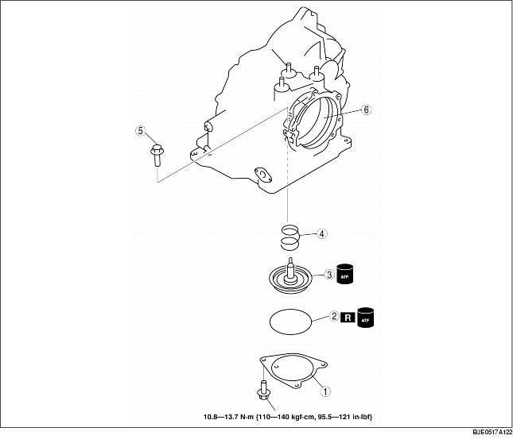
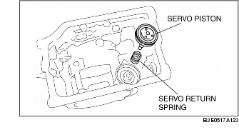
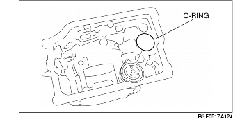
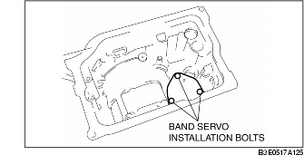

Band servo disassembly/assembly
1. Disassemble in the order indicated in the table.
2. Assemble in the reverse order of disassembly.

Assembly Procedure
1. Measure the spring free length.
Specification
2. Install the servo return spring to the transaxle case.
3. Install the servo piston to the transaxle case.

4. Apply ATF to new O-ring and install it to the transaxle case.

5. Install the servo retainer by tightening the bolts evenly and gradually.

Tightening torque